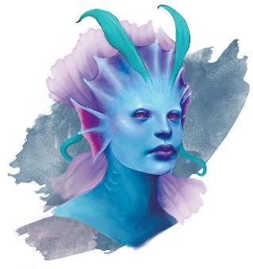

拉曼尼亚Lamannia无尽海洋Endless Ocean的孩子——人鱼们merfolk在各位面之间的大汇合中一次又一次地被吸引到艾伯伦。人鱼遍布艾伯伦海域，而每个“克洛”Kara——部落——都有自己的传统和习俗。雷霆海的主要人鱼文化是克洛卡拉Karakala，其成员称自己为卡拉默Kalamer。
拉曼尼亚在雷霆海有许多强烈的显能区域，它们是使该地区得名的无休止的风暴的来源。近两个世纪以前，一次异常强烈的相接放大了显能区域的影响。瓦尔莱亚保护国和永恒主宰都受到了拉曼尼亚力量的冲击，人们担心世界之间的屏障可能会被永久破坏。在这场灾难最严重的时候，卡拉默人鱼从拉曼尼亚中被扯出;发现自己无法回家，他们用自己的仪式和法术来控制和修复损害。这些上层水域的显能区域一直是一个威胁，一旦克洛卡拉能够减轻危险，沙华鱼人和海精灵都同意给予他们在上层水域随意旅行的自由，只要他们能管理好这些区域。今天，许多卡拉默人把雷霆海当作他们的新家，从一个地区旅行到另一个地区，实践他们的原始传统。从某种意义上说，他们是游牧的园丁，保护着大自然。由于他们被永恒主宰和保护国承认为中立，他们经常充当信使、信使和调解人，代表这些力量传递消息和谈判——这是一个重要的角色，因为沙华鱼人拒绝直接与海精灵交谈。克洛卡拉的范围沿着科瓦雷岛的南部海岸延伸；克洛卡拉吟游诗人的到来通常是布鲁兰或吉拉哥渔村的一件大事;他们不止一次地解决了渔民和永恒主宰之间的争端。
总体而言，克洛卡拉是一支中立力量，最重要的是在显能区域——他们称之根源roots——之间旅行，并执行保持其稳定的仪式。 然而，有些卡拉默群体暗地鄙视那些为了自己的利益而扭曲自然的人——干皮佬、沙华鱼人和海精灵——并且格外反对使用元素束缚elemental binding；这些人已经将林兰德家族视为敌人。有些卡拉默梦想有一天能够清除海洋中的所有工业痕迹，释放显能区域的全部力量而不是限制它们。迄今为止，克洛卡拉一直保持着和平，但他们的黑暗冲动总是有可能脱颖而出——他们将向林兰德家族和世界各国展示风暴的真正力量。

卡拉默人是一个原始的民族，对海流、潮汐和风有着深刻的感悟。有些说，海洋在唱歌。在与克洛卡拉的人鱼打交道时，请考虑以下哲学：
• “水总是在流动；跟随它，让洋流引导你。” 卡拉默更喜欢保持运动状态，并且深深依赖本能和直觉。
• “绕过问题或远离它。” 卡拉默重视灵活性，而不是傲慢和攻击性。
• “只保留那些让你振奋的东西，而不是那些让你失望的东西。” 卡拉默避免任何将他们过于牢固地固定在一个地方或情绪上的事情，包括财产和复仇。
• “在了解整个故事之前不要做出判断。” 卡拉默天生好奇，并寻求了解他们遇到的人和事。
|
原文为： • “The water is always moving; follow it, let the currents guide you.” Kalamer prefer to remain in motion, and deeply rely on instinct and intuition. • “Flow around a problem or away from it.” Kalamer value flexibility over pride and aggression. • “Keep only that which lifts you up, not what drags you down.” Kalamer avoid anything that anchors them too strongly to one place or mood, including property and vendettas. • “Make no judgment until you know the story.” Kalamer are naturally curious and seek to understand the people and things they encounter. |
克洛卡拉是一种文化，而不是一个国家。 大约有一万卡拉默遍布雷霆海，但他们没有领土主权，也没有单一的领导者。 大多数生活在小部族中，重复在上层水域显能区域之间活动的迁徙模式。当他们到达显能区域时，他们会在那里停留一周左右，进行稳定该区域的远处仪式。他们将显能区域视为拉曼尼亚，而在拉曼尼亚区域度过的时光是值得庆祝的时刻。 不过，他们会经过所有显能区域，并且他们的仪式可以遏制任何显能区域的有害影响。
卡拉默不崇拜神灵，但敬畏自然的力量，并相信世界会向那些倾听的人说话。虽然外人可能会认为这是对艾伯伦的崇拜，但卡拉默并不需要将自然拟人化才值得敬畏。卡拉默重视智慧胜过力量，而群体的领导者占据这一位置往往是因为其他人相信他们的直觉；他们通常是长辈，但足够老的年龄不是必要条件。
总体而言，克洛卡拉很和平；这是永恒主宰和保护国允许卡拉默自由行动的原因之一。大多数人鱼都试图了解他们遇到的任何威胁，看看他们是否能找到一种共存的方法——或者如果做不到，就干脆摆脱危险。 然而，当他们被迫采取行动或遇到对自然平衡的真正威胁时，它们可能会成为危险的敌人。
卡拉默时尚简约而实用。卡拉默很少穿着比皮甲更重的东西，大多数人只是佩戴皮带来固定他们的工具和个人物品。许多人携带小纪念品——贝壳、石头、骨头——让他们想起某个地方或某个时刻。 有时，人类说在贝壳中能听到海洋的声音；然而，许多卡拉默人确实能从自然物体中发现来自原初的印记。
卡拉默讲水族语，这是他们源自拉曼尼亚的母语。 他们中的大多数人也会说精灵语、通用语或沙华鱼人语，这取决于他们的迁徙路线将他们带到哪里，而人鱼吟游诗人可能会说所有这些语言。任何能够引导原初魔力的卡拉默都可以讲德鲁伊语，他们认为这是风和水的语言。
克洛卡拉的人鱼遍布雷霆海； 卡拉默部族遵循迁徙模式，而漫游的海妖sirens——卡拉默吟游诗人——则让直觉引导自己。卡拉默鱼留在上层水域，在那里阳光允许植物光合作用。没有卡拉默城市，但他们沿着迁徙路径建立了简单的前哨站，通常是在大量漂浮的植被中（这在拉曼明显区尤其常见）。 许多部族与龙龟结合在一起，它是部族的所在地；人鱼在海龟身上休息。与永恒主宰的龙龟不同，这是一种共生关系；人鱼帮助他们的同伴寻找食物并让龙龟开心。 其他部族也与从拉曼尼亚传入艾伯伦的巨型野兽在一起共生。
克洛卡拉没有奥术魔法或奇械师的传统。然而，大多数卡拉默至少掌握一点原始魔法，可以塑造水或用雷霆打击敌人；这可以通过给予卡拉默人鱼一个常见或不常见的原始魔法咒语来体现。拥有更强天赋的卡拉默被称为风暴呼唤者stormcallers，可以召唤闪电和风。卡拉默勇士可以拥有游侠或德鲁伊的能力，并且能够呈现出致命海洋生物的形态。
其他卡拉默在风和水的运动中听到音乐并成为吟游诗人。卡拉默海妖可以用他们的言语编织幻象，或者迷惑敌人的思想。海妖经常单独旅行，与卡拉默群体及它们遇到的其他船只和社区分享新闻或歌曲。虽然大多数卡拉默吟游诗人都力求给他们遇到的每个人带来欢乐，但也有一些故事讲述了海妖在一个部族的毁灭或目睹了巨大的残忍之后变得痛苦；这些人鱼可能会利用他们的力量来惩罚那些他们认为邪恶的人。卡拉默吟游诗人通常依靠自己的声音而不是使用乐器，并且可以在水下唱歌。
克洛卡拉人用天然材料——石头、贝壳、皮革、骨头——制作工具。 他们的魔法物品——主要是药水、护身符和符咒——会产生原初魔法的效应。
克洛卡拉在政治上保持中立，不认为任何国家或人民凌驾于其他国家或人民之上。 海妖或部族可能与某个特定的渔村有着紧密的联系，但这种感情并不会延伸到声称拥有它的干皮国家。一般来说，克洛卡拉试图忽视国家的行为，专注于其永无止境的朝圣迁徙，尽管个别卡拉默——海妖、守卫、勇士——可能会更积极地参与到单个国家之中。
虽然他们保持中立并充当所有海洋人民之间的信使和信使，但卡拉卡拉不喜欢永恒主宰或瓦尔莱亚保护国。卡拉默人不喜欢看到任何生物被束缚，他们可能会帮助叛变的洛卡萨人或走私者越过永恒主宰批准的路线航行。 然而，虽然他们可能会帮助和平的走私者，但他们不喜欢残忍和贪婪；暴力的海盗会发现人鱼与林兰德家族或永恒主宰巡逻队一样危险。
迄今为止，卡拉卡拉一直是一支被动的调解力量，受到所有人的信任。 但事实是，卡拉默不喜欢海上所有形式的工业。如果可以的话，许多卡拉默人会摧毁所有干皮船只，并摧毁永恒主宰和保护国的城市。 目前，他们致力于遏制雷霆海的显能区域并维持和平；但如果他们愿意，他们也可以释放这些区域的力量，造成可怕的后果。敌对的卡拉默可以首先从拉曼尼亚召唤远古风暴和巨型动物，并将它们释放到航道中，增加海洋的危险——并且可以合理地否认它们来源于自己。 通过将仪式与相接的时期相协调，卡拉默可以极大地增强显化区域的效果。 以这种方式利用拉曼尼亚区域，他们可能会制造毁灭性的飓风和海啸。 海啸会摧毁暴风湾，或者元素飓风会摧毁萨恩的其中一座塔吗？卡拉卡拉对征服没有兴趣； 如果人鱼采取这种行动，那纯粹是为了将商业和文明从海上赶走。
卡拉默人不是征服者。什么可以将他们吸引到一个故事中？ 考虑以下想法。
旅行的海妖The
Traveling Siren。当冒险家参观沿海小镇时，他们听到港口传来清晰而优美的歌声，看到人们奔向码头。除了有趣的场景之外，吟游诗人还可以带来与冒险家直接相关的消息——也许是他们正在等待的一艘船在近海沉没的消息，或者他们可能会分享一个隐藏在海岸附近的废墟的故事。由于海妖充当中间人，吟游诗人也可能为冒险者带来来自自治领或保护国的强大人物的信息。
海上救赎Salvation
at Sea。也许角色的船离开了安全的贸易路线并遭遇了无尽的风暴，或者也许他们只是被海盗或终末战争中残留的武器攻击了。一群卡拉默可以拯救角色，使用原初魔法让干皮佬在水下呼吸，帮助他们安全。 但卡拉默需要回报吗？ 一个强大的怪物可能潜伏在一个显能区域周围，阻止部族执行他们的仪式。 或者，为影中潜伏者Lurker in Shadow服务的底栖魔鱼aboleth可能捕获了潜伏者群体的成员；他们需要你们帮助击败那只巨兽。
复仇风暴The
Vengeful Storm。尽管卡拉默很和平，但风暴召唤者拉拉塔拉Llaratala无法再与林兰德家族分享水域并忍受其对元素的压迫。 她和她的部族顶上了元素大帆船，粉碎了林兰德的船只并释放了被束缚的元素。家族雇佣冒险家来查明谁对他们船只的破坏负有责任。角色们将如何追踪人鱼主谋，而他们又会选择做什么？
德鲁伊盟友Druidic
Allies。当冒险家在海岸或船上时，卡拉默向队伍中的德鲁伊呼唤。风暴呼唤者用德鲁伊语向他们讲话，以自然世界的捍卫者的身份请求他们帮助应对超自然威胁。这可能是底栖魔鱼或其他异怪，也可能是由玛伯尔或费尼亚等显能区域带来的危险，这些区域正在猛烈激增并不断恶化。德鲁伊和他们的同伴能帮助遏制威胁吗？
中介人Intermediaries。卡拉默充当瓦尔莱亚保护国和永恒领土之间的信使和特使。航行时，冒险家们发现了死去的卡拉默。他所携带的信息可能是阻止两国之间爆发新战争的关键。角色们能找到传达它的方法吗？
边栏：变体规则-卡拉默梭螺鱼人Variant Rule: Kalamer Triton卡拉默使用瓦罗怪物指南中提供的梭螺鱼人种族特征，但有两处变化。这些取代了标准梭螺鱼人的语言特性： 卡拉默变形Kalamer Transformation。当你完成短休后，你可以改变你的形态。你可以变成两足的梭螺鱼人，也可以变成带尾巴的人鱼。在人鱼形态下，你的基本行走速度降低至 10 英尺，游泳速度提高至 40 英尺。当你呈现人鱼形态时，你可以选择腿上穿的装备和衣服是否掉落到地上，或者是否融入你的身体，直到你恢复梭螺鱼人形态。该转变没有其他影响。 语言Languages。你可以说、读、写通用语和水族语 |